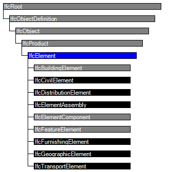
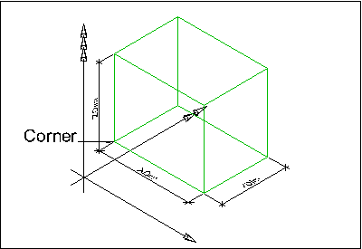

| Element (allgemein) |
 | Element |
 | Élément |
An element is a generalization of all components that make up an AEC product.
Elements are physically existent objects, although they might be void elements, such as holes. Elements either remain permanently in the AEC product, or only temporarily, as formwork does. Elements can be either assembled on site or pre-manufactured and built in on site.
EXAMPLE Examples of elements in a building construction context are walls, floors, windows and recesses.
The elements can be logically contained by a spatial structure element that constitutes a certain level within a project structure hierarchy (site, building, storey or space). This is done by using the IfcRelContainedInSpatialStructure relationship. An element can have material and quantity information assigned through the IfcRelAssociatesMaterial and IfcRelDefinesByProperties relationship.
In addition an element can be declared to be a specific occurrence of an element type (and thereby be defined by the element type properties) using the IfcRelDefinesByType relationship. An element can also be defined as an element assembly that is a group of semantically and topologically related elements that form a higher level part of the AEC product. Those element assemblies are defined by virtue of the IfcRelAggregates relationship.
EXAMPLE Examples for element assembly are complete Roof Structures, made by several Roof Areas, or a Stair, composed by Flights and Landings.
Elements that performs the same function may be grouped by an "Element Group By Function". It is realized by an instance of IfcGroup with the ObjectType ='ElementGroupByFunction'.
HISTORY New entity in IFC1.0
| # | Attribute | Type | Cardinality | Description | R |
|---|---|---|---|---|---|
| 8 | Tag | IfcIdentifier | ? | The tag (or label) identifier at the particular instance of a product, e.g. the serial number, or the position number. It is the identifier at the occurrence level. | X |
| FillsVoids | IfcRelFillsElement @RelatedBuildingElement | S[0:1] | Reference to the IfcRelFillsElement Relationship that puts the element as a filling into the opening created within another element. | ||
| HasOpenings | IfcRelVoidsElement @RelatingBuildingElement | S[0:?] | Reference to the IfcRelVoidsElement relationship that creates an opening in an element. An element can incorporate zero-to-many openings. For each opening, that voids the element, a new relationship IfcRelVoidsElement is generated. | X | |
| ContainedInStructure | IfcRelContainedInSpatialStructure @RelatedElements | S[0:1] | Containment relationship to the spatial structure element, to which the element is primarily associated. This containment relationship has to be hierachical, i.e. an element may only be assigned directly to zero or one spatial structure. | X |

| # | Attribute | Type | Cardinality | Description | R |
|---|---|---|---|---|---|
| IfcRoot | |||||
| 1 | GlobalId | IfcGloballyUniqueId | Assignment of a globally unique identifier within the entire software world. | X | |
| 2 | OwnerHistory | IfcOwnerHistory | ? |
Assignment of the information about the current ownership of that object, including owning actor, application, local identification and information captured about the recent changes of the object,
NOTE only the last modification in stored - either as addition, deletion or modification. IFC4 CHANGE The attribute has been changed to be OPTIONAL. | X |
| 3 | Name | IfcLabel | ? | Optional name for use by the participating software systems or users. For some subtypes of IfcRoot the insertion of the Name attribute may be required. This would be enforced by a where rule. | X |
| 4 | Description | IfcText | ? | Optional description, provided for exchanging informative comments. | X |
| IfcObjectDefinition | |||||
| HasAssignments | IfcRelAssigns @RelatedObjects | S[0:?] | Reference to the relationship objects, that assign (by an association relationship) other subtypes of IfcObject to this object instance. Examples are the association to products, processes, controls, resources or groups. | X | |
| Nests | IfcRelNests @RelatedObjects | S[0:1] | References to the decomposition relationship being a nesting. It determines that this object definition is a part within an ordered whole/part decomposition relationship. An object occurrence or type can only be part of a single decomposition (to allow hierarchical strutures only).
IFC4 CHANGE The inverse attribute datatype has been added and separated from Decomposes defined at IfcObjectDefinition. | ||
| IsNestedBy | IfcRelNests @RelatingObject | S[0:?] | References to the decomposition relationship being a nesting. It determines that this object definition is the whole within an ordered whole/part decomposition relationship. An object or object type can be nested by several other objects (occurrences or types).
IFC4 CHANGE The inverse attribute datatype has been added and separated from IsDecomposedBy defined at IfcObjectDefinition. | X | |
| HasContext | IfcRelDeclares @RelatedDefinitions | S[0:1] | References to the context providing context information such as project unit or representation context. It should only be asserted for the uppermost non-spatial object.
IFC4 CHANGE The inverse attribute datatype has been added. | ||
| IsDecomposedBy | IfcRelAggregates @RelatingObject | S[0:?] | References to the decomposition relationship being an aggregation. It determines that this object definition is whole within an unordered whole/part decomposition relationship. An object definitions can be aggregated by several other objects (occurrences or parts).
IFC4 CHANGE The inverse attribute datatype has been changed from the supertype IfcRelDecomposes to subtype IfcRelAggregates. | X | |
| Decomposes | IfcRelAggregates @RelatedObjects | S[0:1] | References to the decomposition relationship being an aggregation. It determines that this object definition is a part within an unordered whole/part decomposition relationship. An object definitions can only be part of a single decomposition (to allow hierarchical strutures only).
IFC4 CHANGE The inverse attribute datatype has been changed from the supertype IfcRelDecomposes to subtype IfcRelAggregates. | X | |
| HasAssociations | IfcRelAssociates @RelatedObjects | S[0:?] | Reference to the relationship objects, that associates external references or other resource definitions to the object.. Examples are the association to library, documentation or classification. | X | |
| IfcObject | |||||
| 5 | ObjectType | IfcLabel | ? |
The type denotes a particular type that indicates the object further. The use has to be established at the level of instantiable subtypes. In particular it holds the user defined type, if the enumeration of the attribute PredefinedType is set to USERDEFINED.
| X |
| IsTypedBy | IfcRelDefinesByType @RelatedObjects | S[0:1] | Set of relationships to the object type that provides the type definitions for this object occurrence. The then associated IfcTypeObject, or its subtypes, contains the specific information (or type, or style), that is common to all instances of IfcObject, or its subtypes, referring to the same type.
IFC4 CHANGE New inverse relationship, the link to IfcRelDefinesByType had previously be included in the inverse relationship IfcRelDefines. Change made with upward compatibility for file based exchange. | X | |
| IsDefinedBy | IfcRelDefinesByProperties @RelatedObjects | S[0:?] | Set of relationships to property set definitions attached to this object. Those statically or dynamically defined properties contain alphanumeric information content that further defines the object.
IFC4 CHANGE The data type has been changed from IfcRelDefines to IfcRelDefinesByProperties with upward compatibility for file based exchange. | X | |
| IfcProduct | |||||
| 6 | ObjectPlacement | IfcObjectPlacement | ? | Placement of the product in space, the placement can either be absolute (relative to the world coordinate system), relative (relative to the object placement of another product), or constraint (e.g. relative to grid axes). It is determined by the various subtypes of IfcObjectPlacement, which includes the axis placement information to determine the transformation for the object coordinate system. | X |
| 7 | Representation | IfcProductRepresentation | ? | Reference to the representations of the product, being either a representation (IfcProductRepresentation) or as a special case a shape representations (IfcProductDefinitionShape). The product definition shape provides for multiple geometric representations of the shape property of the object within the same object coordinate system, defined by the object placement. | X |
| IfcElement | |||||
| 8 | Tag | IfcIdentifier | ? | The tag (or label) identifier at the particular instance of a product, e.g. the serial number, or the position number. It is the identifier at the occurrence level. | X |
| FillsVoids | IfcRelFillsElement @RelatedBuildingElement | S[0:1] | Reference to the IfcRelFillsElement Relationship that puts the element as a filling into the opening created within another element. | ||
| HasOpenings | IfcRelVoidsElement @RelatingBuildingElement | S[0:?] | Reference to the IfcRelVoidsElement relationship that creates an opening in an element. An element can incorporate zero-to-many openings. For each opening, that voids the element, a new relationship IfcRelVoidsElement is generated. | X | |
| ContainedInStructure | IfcRelContainedInSpatialStructure @RelatedElements | S[0:1] | Containment relationship to the spatial structure element, to which the element is primarily associated. This containment relationship has to be hierachical, i.e. an element may only be assigned directly to zero or one spatial structure. | X | |
All general-case subtypes of IfcElement are included in this model view; standard-case and elemented-case subtypes are excluded.
Property Sets for Objects
The Property Sets for Objects concept template applies to this entity as shown in Table 18.
Product Local Placement
The Product Local Placement concept template applies to this entity as shown in Table 19.
| |||||||||
Table 19 — IfcElement Product Local Placement |
Placement of elements is defined by a local placement (a transformation matrix relative to):
The local placement shall always be relative.
CoG Geometry
The CoG Geometry concept applies to this entity.
The 'CoG', Center of Gravity, shape representation is used as a means to verify the correct import by comparing the CoG of the imported geometry with the explicily provided CoG created during export.
Box Geometry
The Box Geometry concept applies to this entity.
 |
EXAMPLE Any IfcElement may be represented by a bounding box, which shows the maximum extend of the body within the object coordinate system established by the IfcObjectPlacement. As shown in Figure 111, the bounding box representation is given by an IfcShapeRepresentation that includes a single item, an IfcBoundingBox. |
Figure 111 — Building element box representation |
Body Solid Geometry General
The Body Geometry General concept applies to this entity.
Body Tessellation Geometry
The Body Tessellation Geometry concept applies to this entity.
The default geometric representation of any IfcElement within this model view is a single or multiple tessellated item. The supported tessellation is a triangulated face set, defined by indices into a Cartesian point list. Optionally normals per vertex can be included as well.
Body SweptSolid PolyCurve Geometry
The Body SweptSolid PolyCurve Geometry concept applies to this entity.
The IfcElement can be geometrically represented by a single or multiple swept solid. In this case, both extruded and revolved solids are supported. The cross section of the swept solid is provided by a poly curve, having straight and circular arc segments. The cross section may have inner loops that result in holes of the resulting swept solid.
Mapped Geometry
The Mapped Geometry concept template applies to this entity as shown in Table 20.
| ||||||
Table 20 — IfcElement Mapped Geometry |
Any IfcElement (so far no further constraints are defined at the level of its subtypes) may be represented using the 'MappedRepresentation'. This shall be supported as it allows for reusing the geometry definition of a type at all occurrences of the same type. The results are more compact data sets.
The same constraints, as given for 'Tessellation', 'SweptSolid', and 'AdvancedSweptSolid' geometric representation, shall apply to the IfcRepresentationMap.
Product Geometry Layer
The Product Geometry Layer concept applies to this entity.
Product Geometry Colour
The Product Geometry Colour concept applies to this entity.
Spatial Containment
The Spatial Containment concept applies to this entity.
Element Composition
The Element Composition concept applies to this entity.
Element Decomposition
The Element Decomposition concept applies to this entity.
Element Voiding
The Element Voiding concept applies to this entity.
Material Single
The Material Single for Objects with Override concept template applies to this entity as shown in Table 21.
| |||||||||||||||
Table 21 — IfcElement Material Single for Objects with Override |
Material Constituent
The Material Constituent Set with Override concept applies to this entity.
Classification
The Classification for Objects with Override concept applies to this entity.
<?xml version="1.0"?>
<ConceptRoot xmlns:xsi="http://www.w3.org/2001/XMLSchema-instance" xmlns:xsd="http://www.w3.org/2001/XMLSchema" uuid="c58866fd-312a-4ed8-8569-b11a0f694634" name="IfcElement" status="sample" applicableRootEntity="IfcElement">
<Applicability uuid="00000000-0000-0000-0000-000000000000" status="sample">
<Template ref="826680f1-b756-4cdf-b424-20b60228e143" />
<TemplateRules operator="and" />
</Applicability>
<Concepts>
<Concept uuid="ab8a65fa-3066-412f-8347-a023abc3f817" name="Property Sets for Objects" status="sample" override="false">
<Template ref="f74255a6-0c0e-4f31-84ad-24981db62461" />
<Requirements>
<Requirement applicability="export" requirement="recommended" exchangeRequirement="dcd96125-898e-4ff0-b294-eb02afe953aa" />
<Requirement applicability="import" requirement="recommended" exchangeRequirement="dcd96125-898e-4ff0-b294-eb02afe953aa" />
</Requirements>
<TemplateRules operator="and">
<TemplateRule Parameters="PsetName=Pset_EnvironmentalImpactIndicators;" />
<TemplateRule Parameters="PsetName=Pset_EnvironmentalImpactValues;" />
<TemplateRule Parameters="PsetName=Pset_Condition;" />
<TemplateRule Parameters="PsetName=Pset_ManufacturerOccurrence;" />
<TemplateRule Parameters="PsetName=Pset_ManufacturerTypeInformation;" />
<TemplateRule Parameters="PsetName=Pset_ServiceLife;" />
<TemplateRule Parameters="PsetName=Pset_Warranty;" />
</TemplateRules>
</Concept>
<Concept uuid="1c47ba50-9354-434d-a9ac-1d7c05a290e3" name="Product Local Placement" status="sample" override="false">
<Template ref="cbe85b5f-7912-4a43-8bb7-1e63bf40b26d" />
<Requirements>
<Requirement applicability="export" requirement="recommended" exchangeRequirement="dcd96125-898e-4ff0-b294-eb02afe953aa" />
<Requirement applicability="import" requirement="recommended" exchangeRequirement="dcd96125-898e-4ff0-b294-eb02afe953aa" />
</Requirements>
<TemplateRules operator="and">
<TemplateRule Description="Placement relative to the position and rotation of the spatial element." Parameters="HasPlacement=IfcLocalPlacement;RelativeToElement=IfcSpatialElement;" />
<TemplateRule Description="Placement relative to the position and rotation of the container element." Parameters="HasPlacement=IfcLocalPlacement;RelativeToElement=IfcElement;" />
</TemplateRules>
</Concept>
<Concept uuid="134dc8e5-a89d-4d54-ac5d-6ba27d2c5a60" name="CoG Geometry" status="sample" override="false">
<Template ref="a13f0eca-6c45-4a95-bfa6-03cc7da6a6cf" />
</Concept>
<Concept uuid="16b0d3f0-2982-4224-ab5b-04288ac8d58b" name="Box Geometry" status="sample" override="false">
<Template ref="b942ceb1-b818-4683-871b-9c979fa34dd5" />
</Concept>
<Concept uuid="0d974712-679c-43e1-b278-326e680d2fe8" name="Body Solid Geometry General" status="sample" override="false">
<Template ref="6656c33f-2ce2-43de-89d6-a7ee1262b1a0" />
</Concept>
<Concept uuid="ce779b85-4fbf-46dc-bcf0-ee657eccd537" name="Body Tessellation Geometry" status="sample" override="false">
<Template ref="5cfd4403-6545-4c6d-bc27-0a95a3d09950" />
</Concept>
<Concept uuid="522f2b24-b397-458a-9c5c-be641cc2071a" name="Body SweptSolid PolyCurve Geometry" status="sample" override="false">
<Template ref="38710ccd-8ff5-41ba-8fda-08300907a02e" />
</Concept>
<Concept uuid="eec431fa-85e7-46a4-b858-31edf9abfb62" name="Mapped Geometry" status="sample" override="false">
<Template ref="ecfdd7c8-71d5-449f-bf20-e63a25dcb9ba" />
<Requirements>
<Requirement applicability="export" requirement="recommended" exchangeRequirement="dcd96125-898e-4ff0-b294-eb02afe953aa" />
<Requirement applicability="import" requirement="recommended" exchangeRequirement="dcd96125-898e-4ff0-b294-eb02afe953aa" />
</Requirements>
<TemplateRules operator="and">
<TemplateRule Parameters="Identifier=Surface;Type=MappedItem;" />
<TemplateRule Parameters="Identifier=Body;Type=MappedItem;" />
</TemplateRules>
</Concept>
<Concept uuid="2a658ec4-ebaa-4967-82b2-45a2bb75b2ea" name="Product Geometry Layer" status="sample" override="false">
<Template ref="79a0d5e1-02ae-41d1-a51d-49a22c5b0a14" />
</Concept>
<Concept uuid="8e814a1e-6188-4bb0-9bcf-07d8147206b4" name="Product Geometry Colour" status="sample" override="false">
<Template ref="bb040be6-824a-4e78-9814-1177b257fdc9" />
</Concept>
<Concept uuid="648282d7-f66b-43dc-9c2d-2ca98f6773d8" name="Spatial Containment" status="sample" override="false">
<Template ref="d9a3f822-0014-4bc2-8d94-9d9067759045" />
</Concept>
<Concept uuid="1bc4288f-24ad-4398-802e-bc935868ed27" name="Element Composition" status="sample" override="false">
<Template ref="ca0f65e2-3913-4fdb-8a09-0c5c7a0d5421" />
</Concept>
<Concept uuid="21563473-16d3-471a-a3b1-881221b2554e" name="Element Decomposition" status="sample" override="false">
<Template ref="8a27c15a-c4ea-4ca9-8cce-7fbba1c9bce0" />
<Requirements>
<Requirement applicability="import" requirement="recommended" exchangeRequirement="dcd96125-898e-4ff0-b294-eb02afe953aa" />
<Requirement applicability="export" requirement="recommended" exchangeRequirement="dcd96125-898e-4ff0-b294-eb02afe953aa" />
</Requirements>
</Concept>
<Concept uuid="f5a4c7d3-f844-473f-8d8d-8591607d5f99" name="Element Voiding" status="sample" override="false">
<Template ref="b9005e79-b5c5-4c0b-9d86-046c21ad420d" />
<Requirements>
<Requirement applicability="export" requirement="recommended" exchangeRequirement="dcd96125-898e-4ff0-b294-eb02afe953aa" />
<Requirement applicability="import" requirement="recommended" exchangeRequirement="dcd96125-898e-4ff0-b294-eb02afe953aa" />
</Requirements>
</Concept>
<Concept uuid="139cc6a8-6b1f-4b75-8104-15fc2f740af3" name="Material Single" status="sample" override="false">
<Template ref="ce228dc3-1168-4ee5-8cde-ae7874b03000" />
<TemplateRules operator="and">
<TemplateRule Parameters="MaterialPropertySetName=Pset_MaterialCommon;" />
<TemplateRule Parameters="MaterialPropertySetName=Pset_MaterialCombustion;" />
<TemplateRule Parameters="MaterialPropertySetName=Pset_MaterialConcrete;" />
<TemplateRule Parameters="MaterialPropertySetName=Pset_MaterialEnergy;" />
<TemplateRule Parameters="MaterialPropertySetName=Pset_MaterialFuel;" />
<TemplateRule Parameters="MaterialPropertySetName=Pset_MaterialHygroscopic;" />
<TemplateRule Parameters="MaterialPropertySetName=Pset_MaterialMechanical;" />
<TemplateRule Parameters="MaterialPropertySetName=Pset_MaterialOptical;" />
<TemplateRule Parameters="MaterialPropertySetName=Pset_MaterialSteel;" />
<TemplateRule Parameters="MaterialPropertySetName=Pset_MaterialThermal;" />
<TemplateRule Parameters="MaterialPropertySetName=Pset_MaterialWater;" />
<TemplateRule Parameters="MaterialPropertySetName=Pset_MaterialWood;" />
<TemplateRule Parameters="MaterialPropertySetName=Pset_MaterialWoodBasedBeam;" />
<TemplateRule Parameters="MaterialPropertySetName=Pset_MaterialWoodBasedPanel;" />
</TemplateRules>
</Concept>
<Concept uuid="8f4f1803-f293-48ef-a50b-899176307cf4" name="Material Constituent" status="sample" override="false">
<Template ref="b31e8fb4-e7b9-48da-bbf4-cfd422f5f6cd" />
</Concept>
<Concept uuid="37f15abd-df8c-4af1-90a9-e2ce3d5eb0f4" name="Classification" status="sample" override="false">
<Template ref="2a56ad37-c686-401e-a4e0-61b428927798" />
</Concept>
</Concepts>
</ConceptRoot>
| # | Concept | Template | Model View |
|---|---|---|---|
| IfcRoot | |||
| Identity | Software Identity | Reference View | |
| Revision Control | Revision Control | Reference View | |
| IfcObjectDefinition | |||
| Classification | Classification | Reference View | |
| IfcObject | |||
| Object User Identity | Object User Identity | Reference View | |
| Object Predefined Type | Object Predefined Type | Reference View | |
| Object Typing | Object Typing | Reference View | |
| Property Sets for Objects | Property Sets with Override | Reference View | |
| IfcElement | |||
| Property Sets for Objects | Property Sets for Objects | Reference View | |
| Product Local Placement | Product Local Placement | Reference View | |
| CoG Geometry | CoG Geometry | Reference View | |
| Box Geometry | Box Geometry | Reference View | |
| Body Solid Geometry General | Body Geometry General | Reference View | |
| Body Tessellation Geometry | Body Tessellation Geometry | Reference View | |
| Body SweptSolid PolyCurve Geometry | Body SweptSolid PolyCurve Geometry | Reference View | |
| Mapped Geometry | Mapped Geometry | Reference View | |
| Product Geometry Layer | Product Geometry Layer | Reference View | |
| Product Geometry Colour | Product Geometry Colour | Reference View | |
| Spatial Containment | Spatial Containment | Reference View | |
| Element Composition | Element Composition | Reference View | |
| Element Decomposition | Element Decomposition | Reference View | |
| Element Voiding | Element Voiding | Reference View | |
| Material Single | Material Single for Objects with Override | Reference View | |
| Material Constituent | Material Constituent Set with Override | Reference View | |
| Classification | Classification for Objects with Override | Reference View | |
<xs:element name="IfcElement" type="ifc:IfcElement" abstract="true" substitutionGroup="ifc:IfcProduct" nillable="true"/>
<xs:complexType name="IfcElement" abstract="true">
<xs:complexContent>
<xs:extension base="ifc:IfcProduct">
<xs:sequence>
<xs:element name="HasOpenings" type="ifc:IfcRelVoidsElement" nillable="true" minOccurs="0" maxOccurs="1"/>
</xs:sequence>
<xs:attribute name="Tag" type="ifc:IfcIdentifier" use="optional"/>
</xs:extension>
</xs:complexContent>
</xs:complexType>
ENTITY IfcElement
ABSTRACT SUPERTYPE OF(ONEOF(IfcBuildingElement, IfcCivilElement, IfcDistributionElement, IfcElementAssembly, IfcElementComponent, IfcFeatureElement, IfcFurnishingElement, IfcGeographicElement, IfcTransportElement))
SUBTYPE OF (IfcProduct);
Tag : OPTIONAL IfcIdentifier;
INVERSE
FillsVoids : SET [0:1] OF IfcRelFillsElement FOR RelatedBuildingElement;
HasOpenings : SET [0:?] OF IfcRelVoidsElement FOR RelatingBuildingElement;
ContainedInStructure : SET [0:1] OF IfcRelContainedInSpatialStructure FOR RelatedElements;
END_ENTITY;
 References: IfcRelConnectsPorts
IfcRelFillsElement
IfcRelVoidsElement
References: IfcRelConnectsPorts
IfcRelFillsElement
IfcRelVoidsElement
 Instance diagram
Instance diagram Link to this page
Link to this page